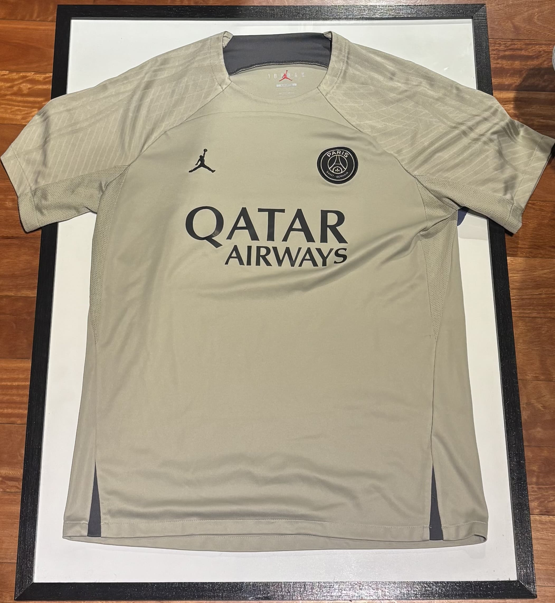
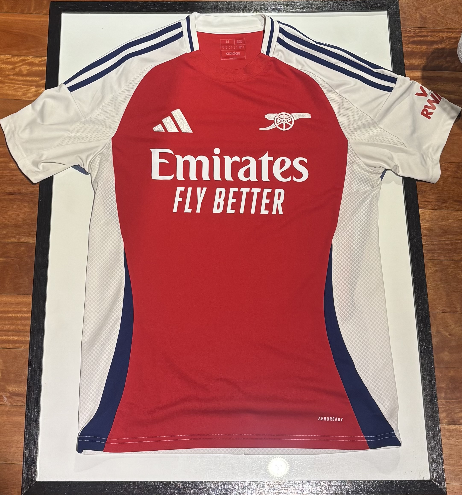
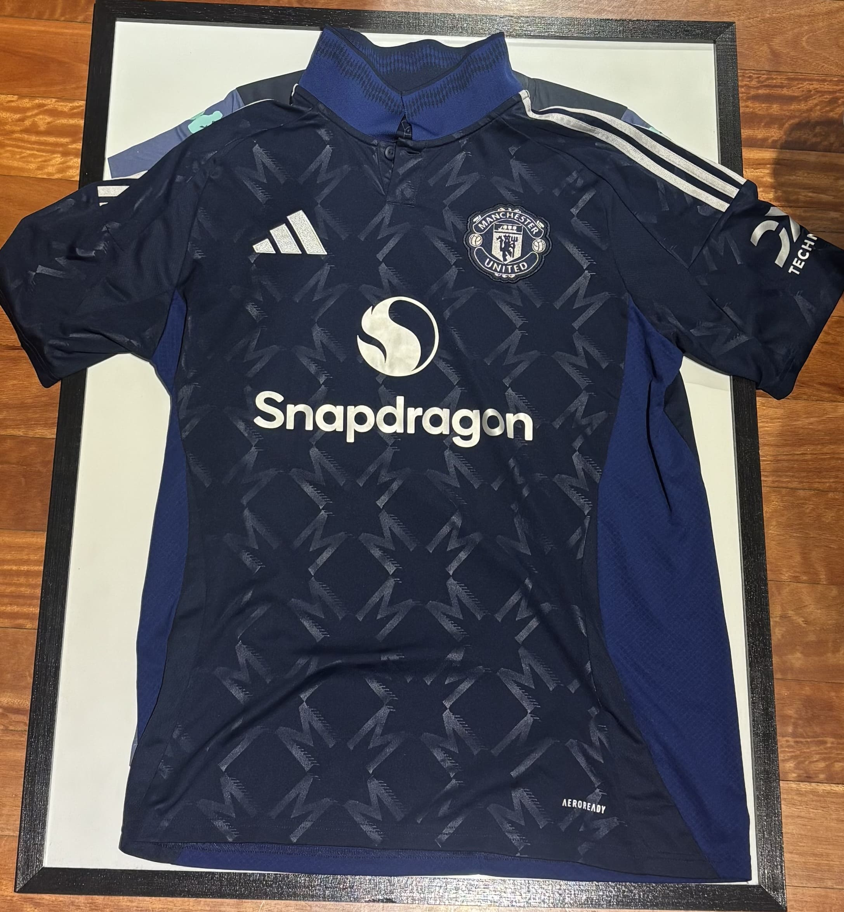

MI COLECCIÓN
En esta sección se encuentran algunas de las camisetas que forman parte
de mi colección personal.
En este caso se encuentran camisetas de equipos europeos que son sumamente conocidos a nivel mundial y son potencia futbolística.
PARIS SAINT-GERMAIN
SU HISTORIA
Esta camiseta corresponde al Paris Saint-Germain, club francés que fue campeón de las 2 ultimas ediciones de la UEFA Champions League.
Fue utilizada durante la temporada 2023/24 en colaboración con Jordan.
ARSENAL FC

SU HISTORIA
Esta camiseta corresponde al Arsenal FC, equipo inglés quien es el actual campeón de la Premier League.
Fue utilizada durante la temporada 2024/25 y fue confeccionada por la marca Adidas.
Forma parte de mi colección ya que es uno de mis equipos favoritos a nivel mundial, y que considero al fútbol ingles como el más competitivo y placentero de ver.
MANCHESTER UNITED

SU HISTORIA
Esta camiseta corresponde al Manchester United, equipo inglés y el más ganador de su país.
Fue utilizada durante la temporada 2024/2025 y fue confeccionada por la marca Adidas.
Es una pieza clave de mi colección ya que es uno de los diseños y colores que más me gustan.